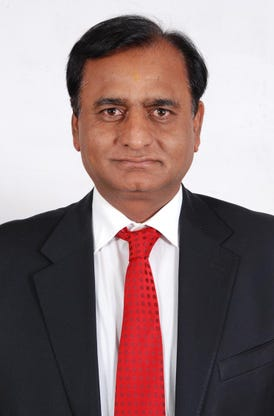

Egerton Universityis a world class institition of higher learning for the betterment of livelihood.Below is a short article about my experience studying in Egerton.
The current chancellor of Egerton university is bussinessman Narendra Raval who was appointed in 2019.

more deatails abut Narendra raval
The current Vice-Chancellor is Prof.Francis Kibwage who was appointed in 2021 succedding Prof Rose Mwonya.Egerton leadership has been accused of mismanagment of institution resources which has crippled efficient running of the institution.The VC is incharge of running school activities under the approval of the senate.
there are 3 deputy Vice-Chancellors each with separate and specific roles.
Egerton University prides itself as a giant of academic brilliance.Egerton topped in Ranking by Academic Performance (URAP) rankings system. Egerton was ranked at 2 in Kenya and 1945 in World Ranking 2020 – 2021. The ranking of the top 3,000 world universities is based on academic quality.
It has 4 campuses that is;
The institution has 12 facalties in total.They are:
Each faculty has varying number of departments
The major challenge i have experienced during my time in Egerton is the issue of strikes of both stuedents and staff.A students strike was experienced in December 2019 after the students through the Students Union Of Egerton University (SUEU) felt that the administration was not taking their plight with consideration.As a result,studies were suspended for a while in the institution.The institution staff also went on an industrial strike after their Bargained wage agreement was not honoured.The strike lasted for 1 month until finally an agreement was reached upon.Shortly afterwards a lecturers strike followed with the dons accusing the institution of not honouring the Bargained Wage Agreement.The strike lasted for almost 4 months with a series of meetings that bore no fruits.All this time learning remained suspended and students were askej d to evacuate school until an agreement was agreed.The students were eventually recalled on February after an agreement occured.This makes leearning to be very inconsistent and completion of courses to take longer periods.